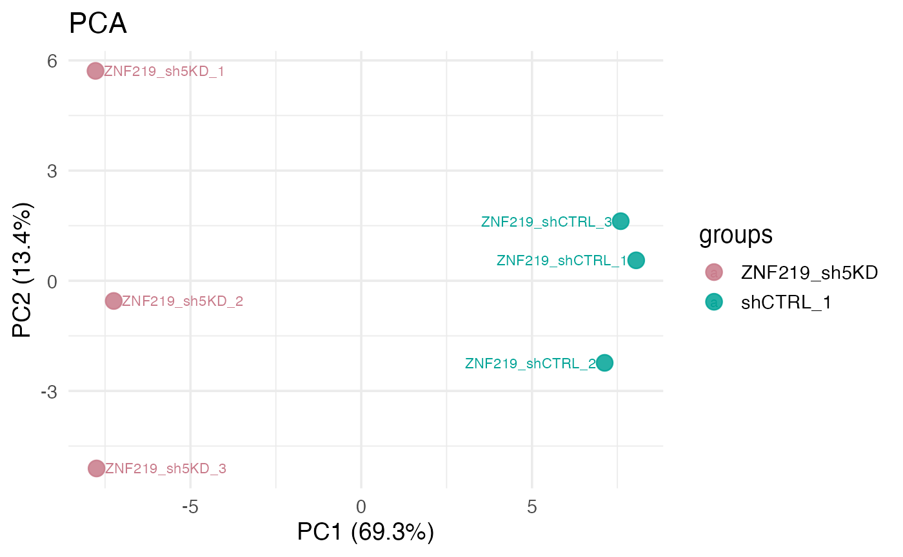
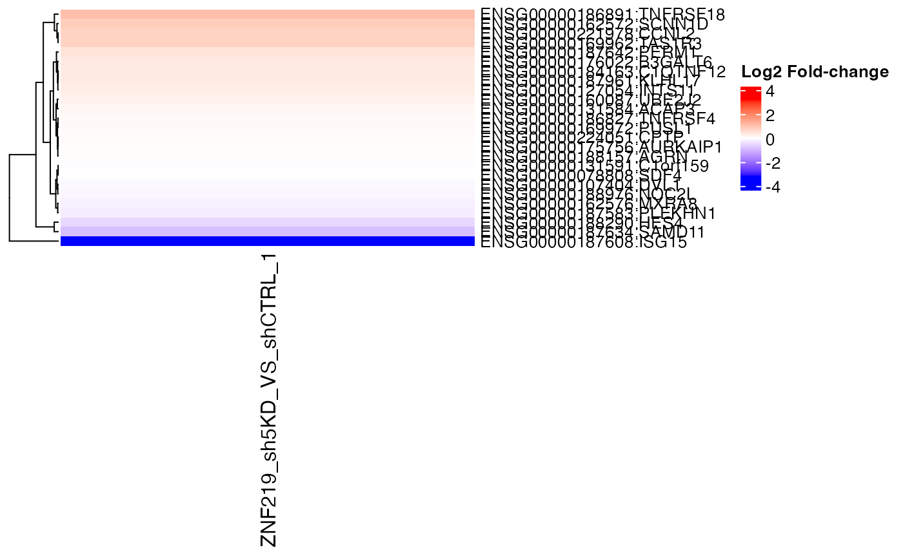

VISTA-intro.RmdThe VISTA package provides a SummarizedExperiment-based workflow for RNA-seq analysis and visualization. This vignette walks through creating a VISTA object from count data, accessing differential expression results, and generating a few exploratory plots.
For illustration we use the count_data and
sample_info datasets distributed with the package. To keep
the vignette runtime small we restrict the analysis to a subset of genes
and two experimental groups.
library(VISTA)
library(dplyr)
data(count_data)
data(sample_info)
# Focus on two conditions to keep evaluation quick
subset_groups <- c("ZNF219_sh5KD", "shCTRL_1")
subset_samples <- sample_info |>
filter(groups %in% subset_groups)
counts_small <- count_data[seq_len(200), c("gene_id", subset_samples$sample_names)]We run the built-in DESeq2 workflow through
create_vista(), which returns a fully initialized
VISTA object containing normalized counts, annotations, and
differential expression summaries.
vista_obj <- create_vista(
counts = counts_small,
sample_info = subset_samples,
column_geneid = "gene_id",
group_column = "groups",
group_numerator = "ZNF219_sh5KD",
group_denominator = "shCTRL_1",
min_counts = 5,
min_replicates = 1
)
vista_obj## class: VISTA
## dim: 158 6
## metadata(6): de_results de_summary ... provenance comparison
## assays(1): norm_counts
## rownames(158): ENSG00000187634:SAMD11 ENSG00000188976:NOC2L ...
## ENSG00000142634:EFHD2 ENSG00000162438:CTRC
## rowData names(1): baseMean
## colnames(6): ZNF219_sh5KD_1 ZNF219_sh5KD_2 ... ZNF219_shCTRL_2
## ZNF219_shCTRL_3
## colData names(2): groups sizeFactorThe differential expression results live in the metadata slot:
names(comparisons(vista_obj))## [1] "ZNF219_sh5KD_VS_shCTRL_1"
head(deg_summary(vista_obj)[[1]])## # A tibble: 3 × 2
## regulation n
## <chr> <int>
## 1 Down 8
## 2 Other 149
## 3 Up 1VISTA ships with a suite of plotting helpers that operate directly on
the VISTA object. Below is an example PCA plot comparing
the two groups.
get_pca_plot(
vista_obj,
sample_group = subset_groups,
top_n_genes = 100,
label_replicates = TRUE,
circle_size = 4
)
We can also inspect per-gene fold changes as a heatmap. Here we display the top variable genes from the single comparison that was performed.
top_genes <- head(rownames(vista_obj), 25)
get_foldchange_heatmap(
vista_obj,
sample_comparisons = names(comparisons(vista_obj)),
genes = top_genes,
cluster_rows = TRUE,
show_row_names = TRUE
)